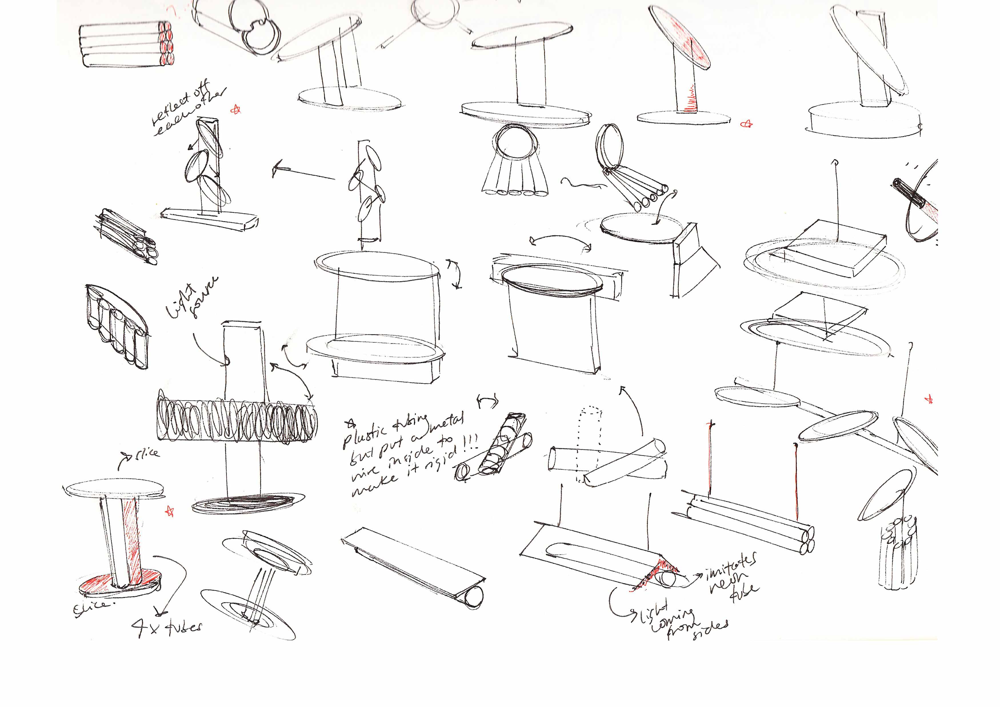
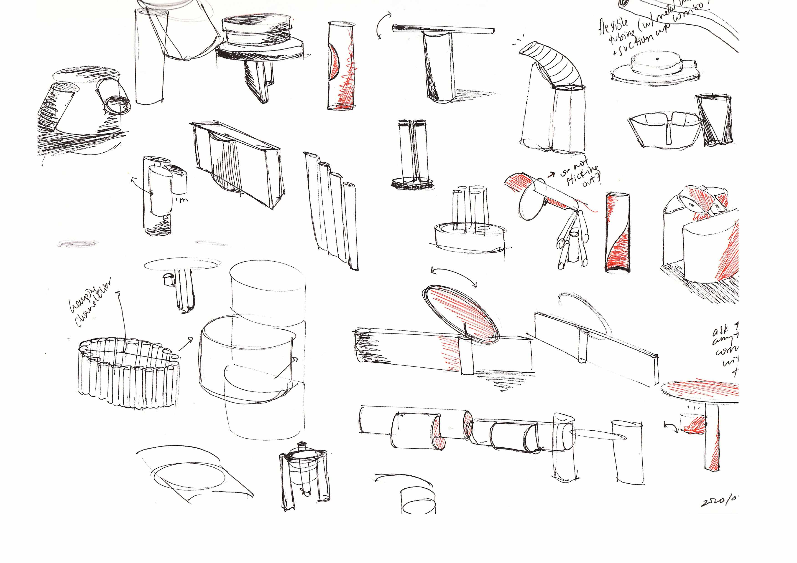
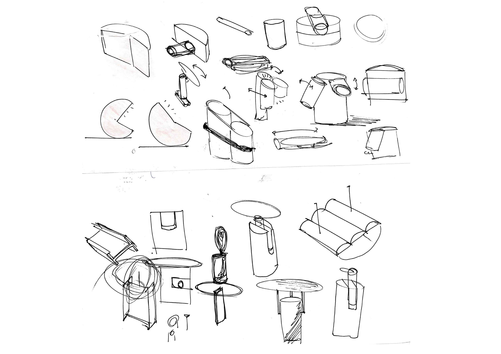
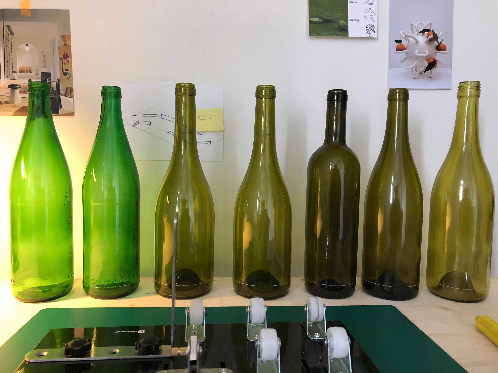
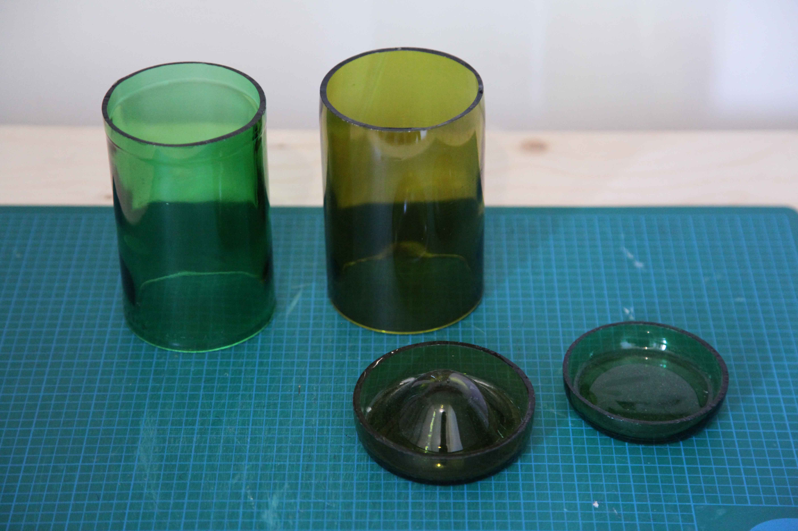
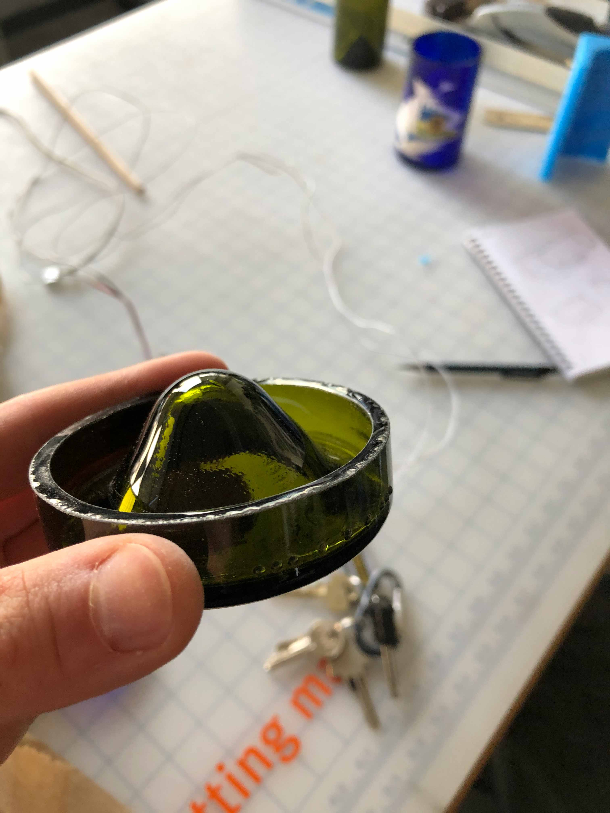
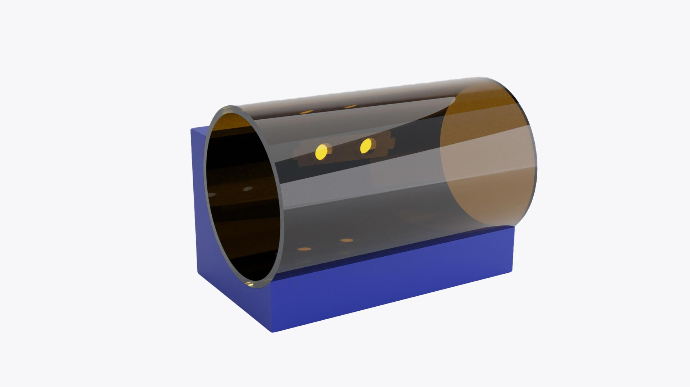
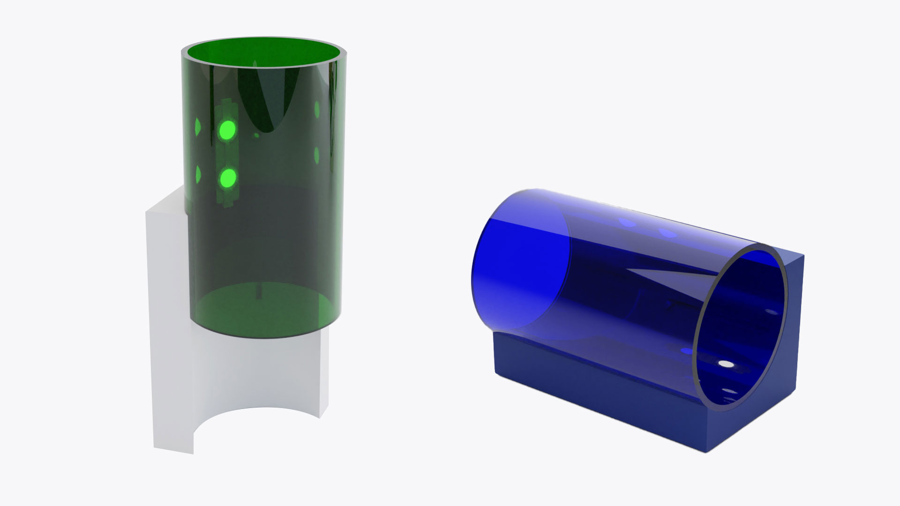

Tube Lamp is a table lamp made of recycled wine bottles. The project was conceived as a way to repurpose waste without being bound to its form (i.e. traditional wine bottle lamps consisting of a vertical wine bottle with a lampshade placed on top). The glass is fixed to a wooden base with an adjustable screw, allowing it to slide either horizontally or vertically, depending on the orientation of the base. The lamp can therefore function as either ambient lighting or more directed lighting.
Initial Sketches
  Fabrication Process
    